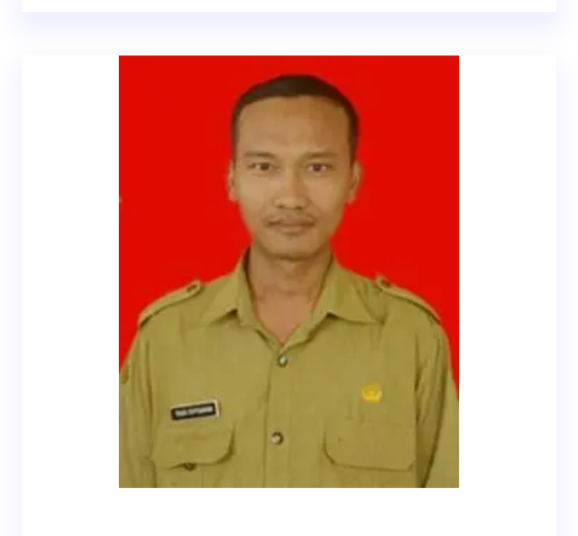
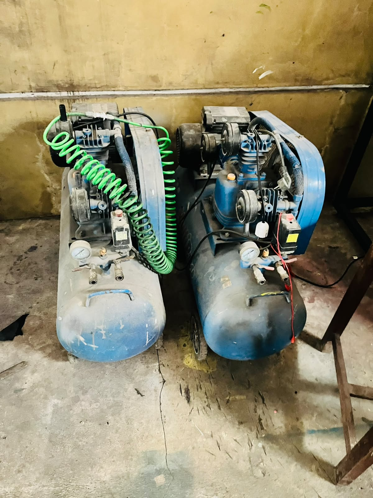
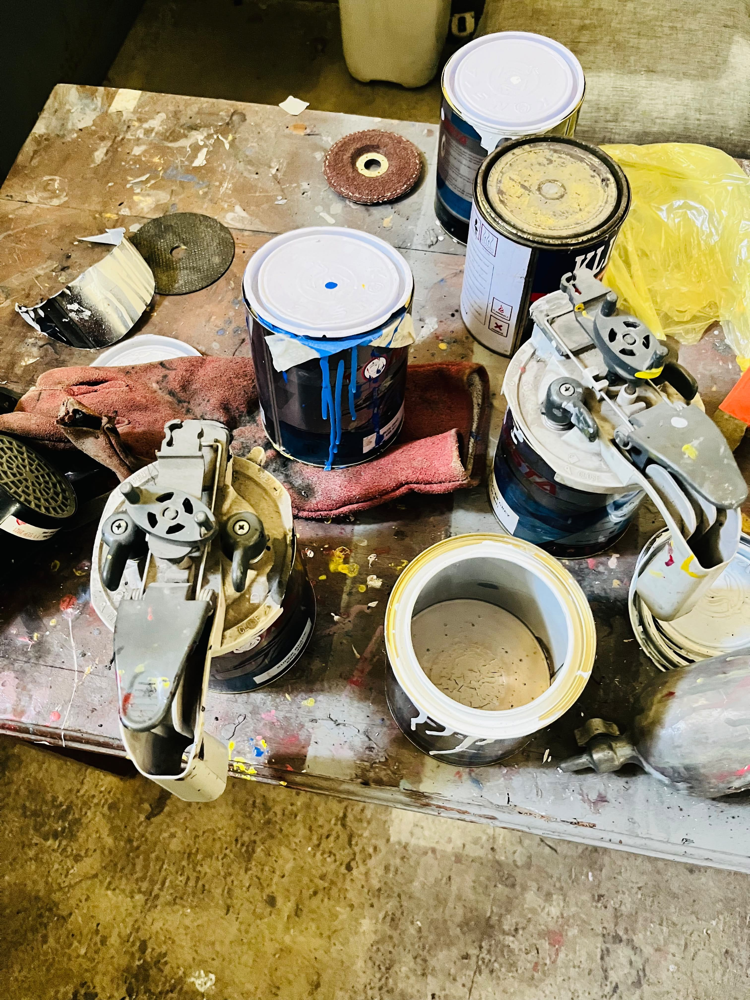
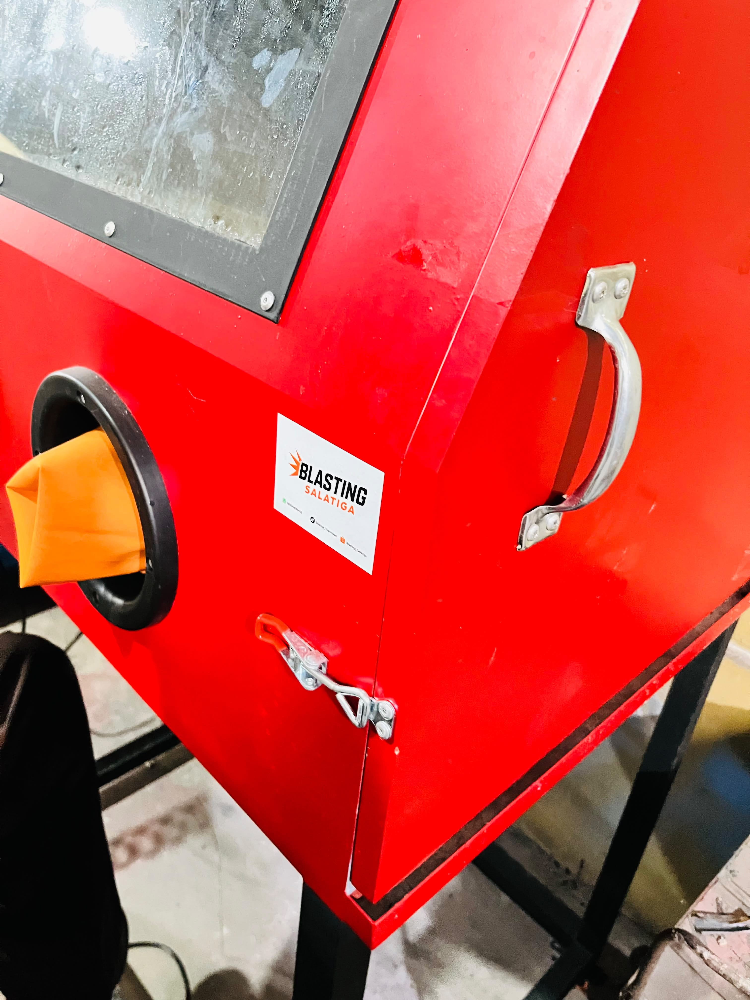
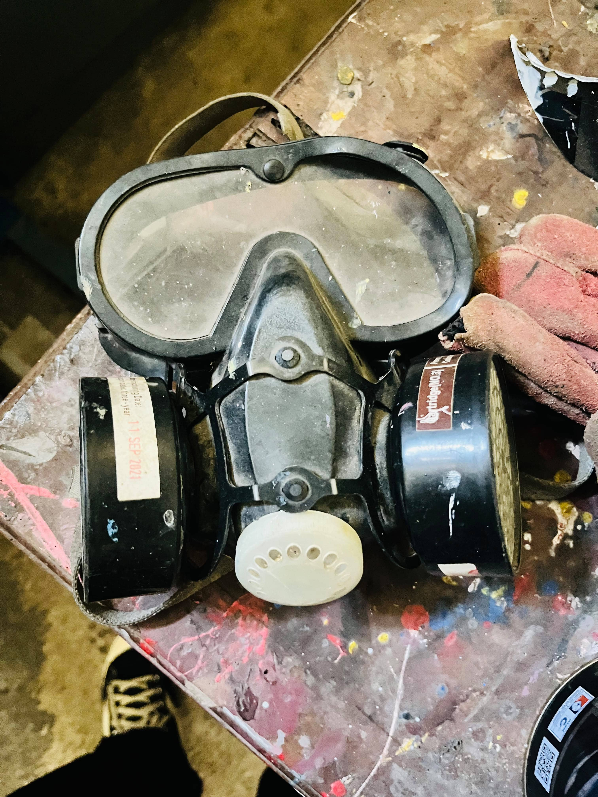

Teknik Body Otomotif (TBO)
Teknik Body Otomotif (TBO) di SMKN 1 Gantar adalah berfokus pada keterampilan perbaikan, perawatan, restorasi, serta pengecatn eksterior dan struktur bodi kendaraan sesuai standar industri
Profil Guru TBO

Yoga Supraman, S.Pd
Kaprodi TBO
Materi Pembelajaran TBO
- Dasar dasar K3LH dan keselamatan
- Gambar teknik dan perancangan
- Teknik perbaikan panel dan logam
- Restorasi dan perbaikan bodi kendaraan
- Pengecatan kendaraan
- Manajemen bengkel bodi dan Estimasi biaya
Fasilitas Jurusan TBO

Kompresor angin

Peralatan Cat

Kabinet Penyemprotan
